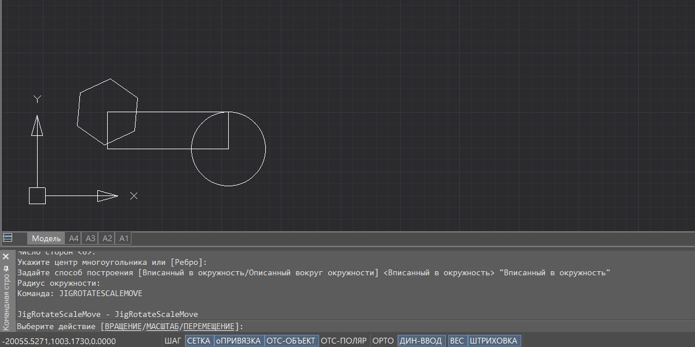
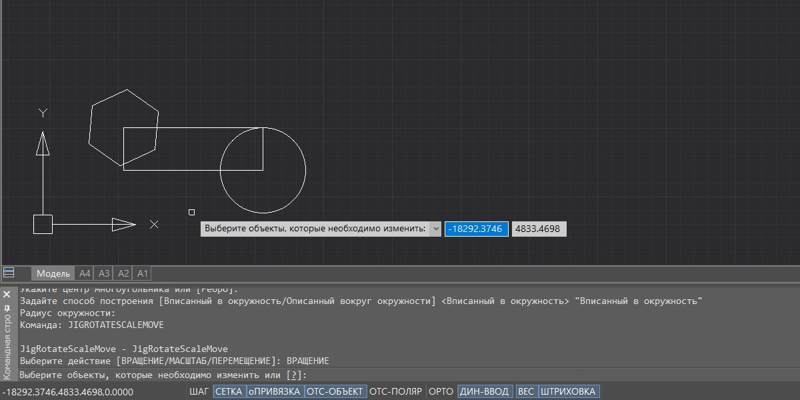
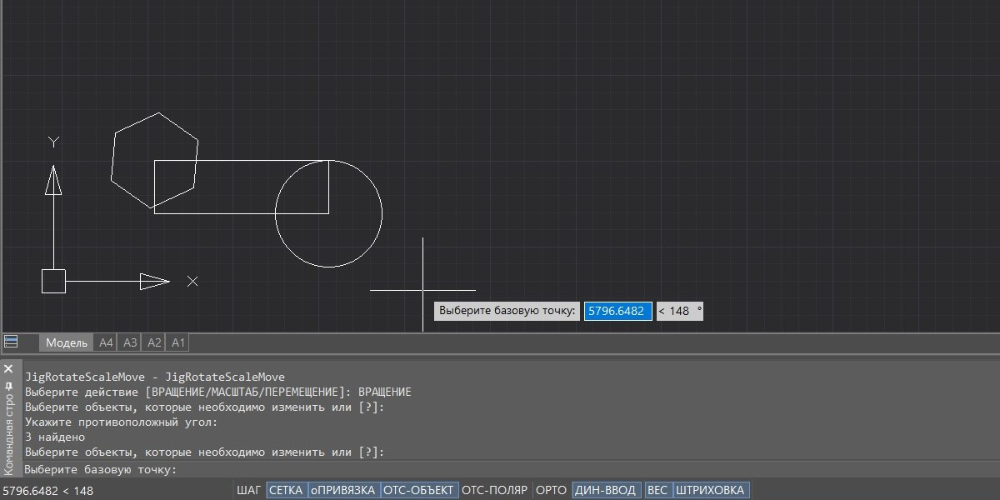
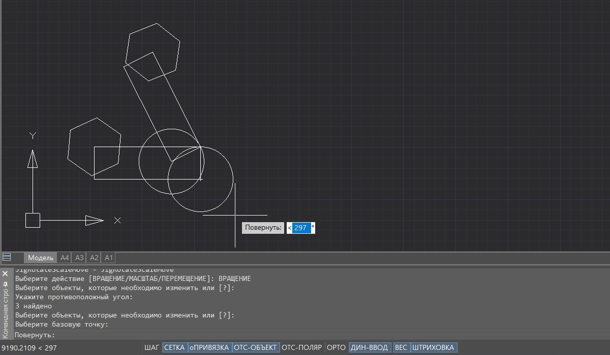
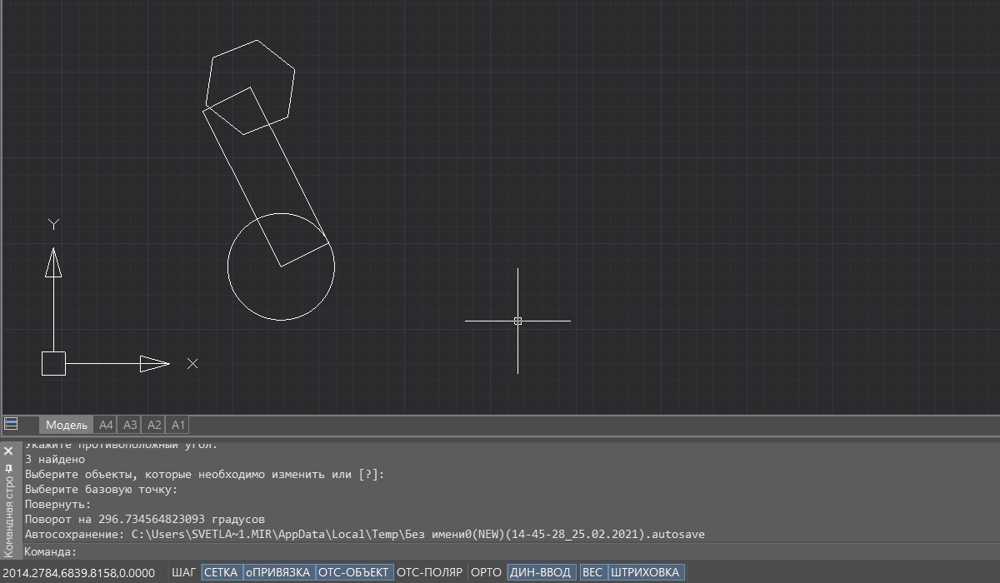
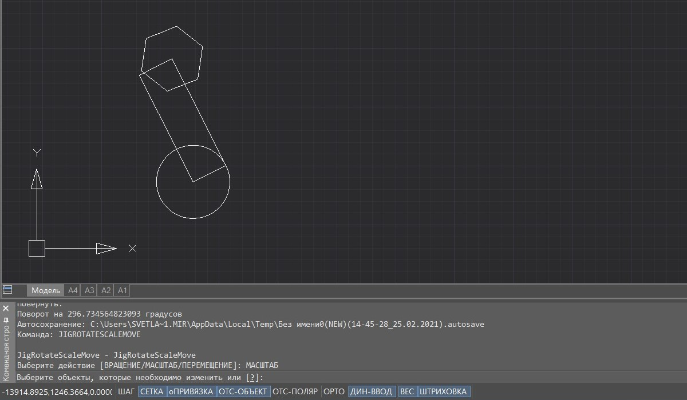
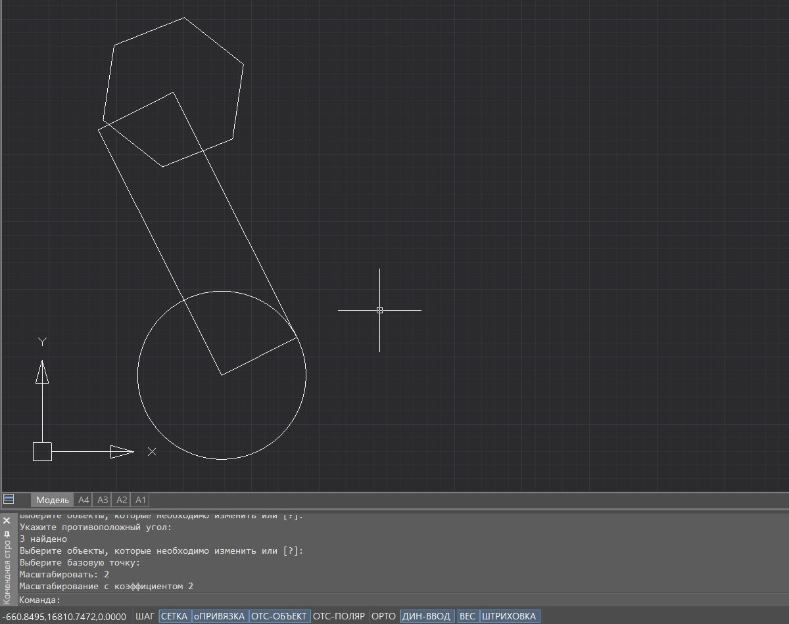
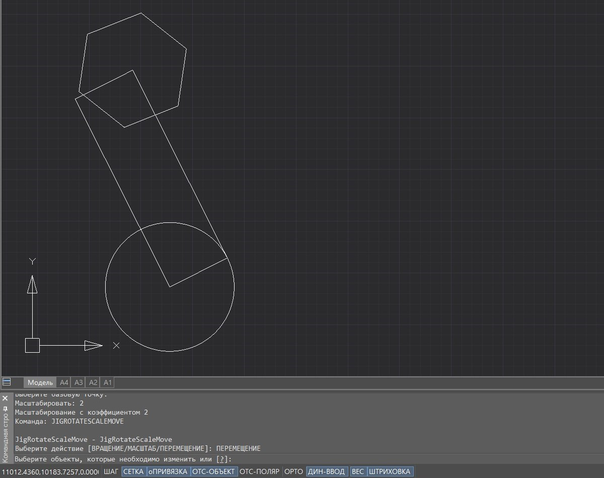
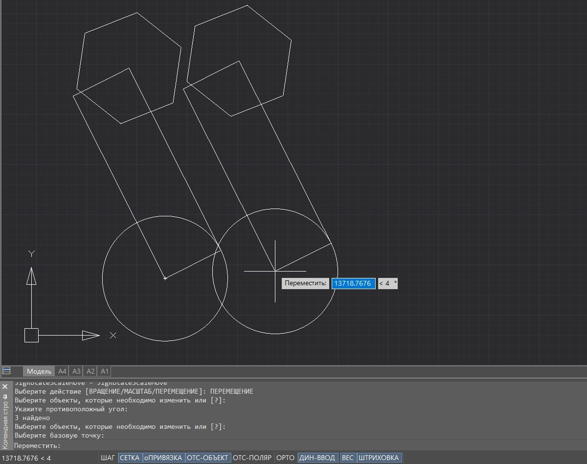
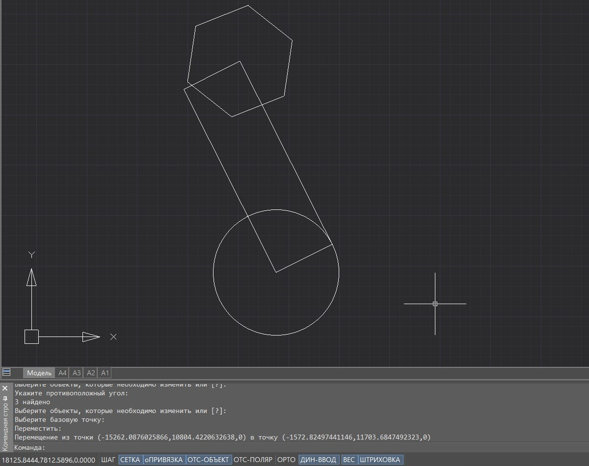

Свернуть все
Свернуть все Развернуть все
Развернуть все|
Справочное руководство .NET API
|
    
Закрыть
|
|
Поворот, перемещение, копирование пользовательского примитива с предпросмотром
Свернуть всеРазвернуть все|
Справочное руководство .NET API
|
Закрыть
|
|
Статья о том, как программно добавить к повороту, перемещению, копированию пользовательского примитива предпросмотр на чертеже.
Пример
В примере приведена команда JigRotateScaleMove, с помощью которой можно вращать, масштабировать(уменьшать/увеличивать) и перемещать выбранный примитив или группу примитивов с помощью технологии Jig. Для вращения, масштабирования и перемещения используются методы JigPrompts.AcquireAngle(JigPromptAngleOptions options), JigPrompts.AcquireDistance(JigPromptDistanceOptions options), JigPrompts.AcquirePoint(JigPromptPointOptions options) соответственно.
Логика работы команды JigRotateScaleMove реализована в классе RotateScaleMove. В этом классе применяются рассматриваемые в настоящем разделе методы.
Работа команды JigRotateScaleMove:









10.Завершение перемещения объектов с сообщением о выполненном преобразовании:
